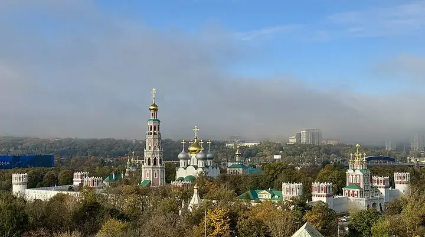

Фото: Ivtorov, CC BY-SA 4.0 · Wikimedia Commons
Монастырь · ЦАО
Новодевичий монастырь
Ансамбль XVI–XVII веков над прудом — одна из самых красивых панорам Москвы.
- ₽ · до 1 500 ₽ на человека
- в 2 планах
Позвать сюда: Новодевичий монастырьОткрыть в каталоге: Новодевичий монастырьМаршрут до места: Новодевичий монастырь
Адрес и детали
- Адрес
- Новодевичий пр., 1
Открыть на Яндекс Картах (в новой вкладке) - Метро
- м. Спортивная
- Округ
- Центр (ЦАО)
- Цена
- до 1 500 ₽ на человека
- Часы работы
- пн–вс 07:30–18:00 · проверили в октябре 2026
- Телефон
- +7 (499) 245-31-68
- Проверено
- работает — проверили в октябре 2026
Планы с этим местом 2
- Новодевичий монастырь · Монастырь · м. Спортивная
- 5 минут пешкомНоводевичье кладбище · Некрополь
Стены Новодевичьего над прудом, потом тихий некрополь с надгробиями Гоголя, Булгакова и Чехова.
Открыть план: Монастырь и некропольПозвать сюда: Монастырь и некрополь
Фото: Ivtorov, CC BY-SA 4.0 · Wikimedia Commons
- Новодевичий монастырь · Монастырь · м. Спортивная
- 3 минуты пешкомНоводевичьи пруды · Парк
- 17 минут пешкомABC Coffee Roasters · Кофейня
Стены и башни монастыря отражаются в пруду, вокруг жёлтые ивы. Согреться — кофе в ABC на Усачёва.
Открыть план: Новодевичий в листопадПозвать сюда: Новодевичий в листопад
Фото: Ivtorov, CC BY-SA 4.0 · Wikimedia Commons

Похожие рядом


Что ещё рядом


Как позвать
- Выбери план, место или событие — в карточке адрес, цены и маршрут в Яндекс Картах.
- Нажми «Позвать сюда» — соберётся приглашение-игра для свидания или голосование для компании.
- Отправь ссылку в любой мессенджер: тебе ответят, а компания отметит, куда и когда может. Бесплатно и без регистрации.